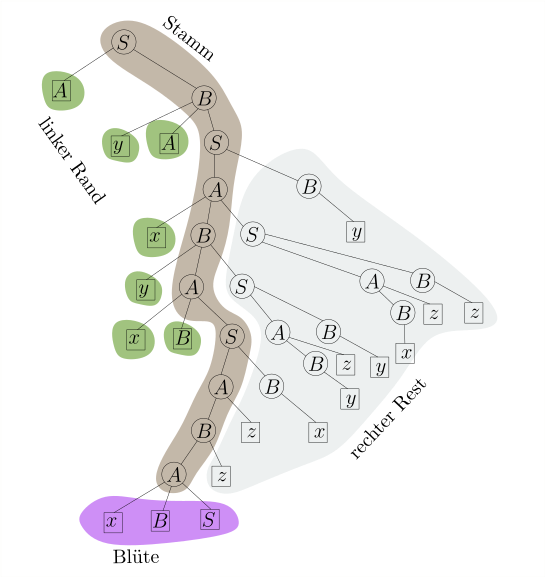
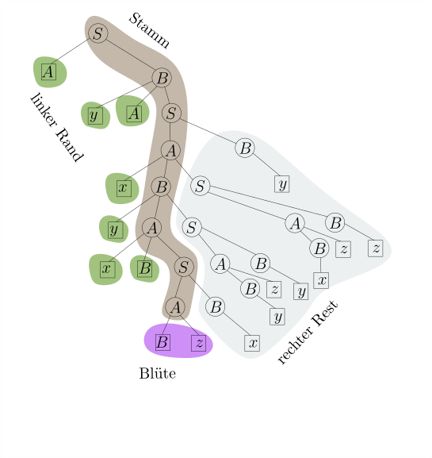
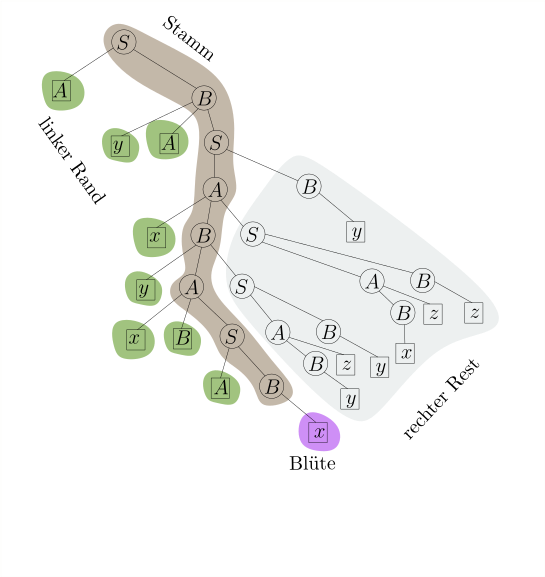
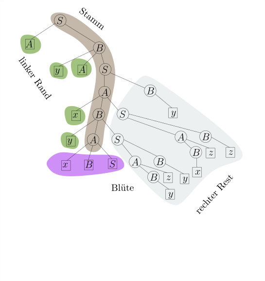
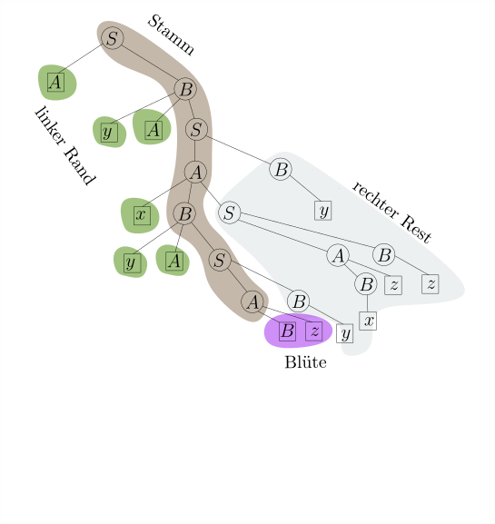
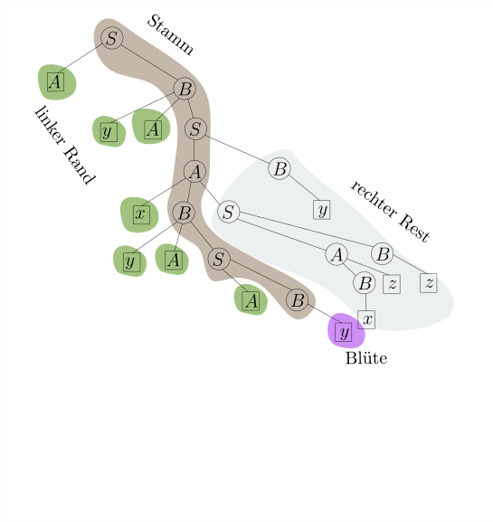

::::ChapterCtr.8
Linker Rand, Blüten und die DK-Grammatik
In diesem Teilkapitel werden wir sehen,
wie wir für eine gültige Wortform $\gamma$
den korrekten Linksreduktionsschritt
$$
\begin{align*}
\gamma = \alpha \beta w \rstep{} \alpha X w
\end{align*}
$$
finden. Als erstes müssen wir uns überlegen,
wie die Front $\front(\gamma) = \alpha \beta$
überhaupt aussehen kann. Wenn wir
uns den Ableitungsbaum von $\gamma$ ansehen,
wird das einigermaßen offensichtlich sein.
Zur Erinnerung:
Zu jeder Ableitung $S \Step{}^* w \in \Sigma^*$ können wir
eindeutig einen
Ableitungsbaum
zeichnen. Wenn die Grammatik
eindeutig ist, so hängt auch der Baum nur vom Wort $w \in L(G)$ ab und
nicht von der Ableitung $S \Step{}^* w$.
Allerdings können wir für Zwischenformen
$S \Step{}^* \gamma \Step{}^* w$ auch einen Ableitungsbaum zeichnen,
und der unterscheidet sich stark, abhängig davon, ob $S \Step{}^* \gamma$ eine
Rechtsableitung, Linksableitung oder sonst was ist.
Ich zeige Ihnen jetzt ein Beispiel für eine Grammatik und
eine Handvoll Ableitungen samt Ableitungsbaum.
$$
\begin{align*}
G&: \\
S&\rightarrow AB \\
A&\rightarrow xBS \ | \ Bz \\
B&\rightarrow yAS \ | \ Az \ | \ x \ | \ y \ | \ z
\end{align*}
$$
Es ist zu diesem Zeitpunkt irrelevant, ob $G$ eindeutig
oder sogar $LR(0)$ ist. Ich interessiere mich
gerade nur für Ableitungsbäume von Wortformen.
Fällt Ihnen etwas auf? Schauen Sie sich bitte noch ein weiteres
Beispiel an für den Ableitungsbaum einer in einer
gültigen Wortform, also von einer, die in einer
Rechtsableitung vorkommen kann:
Warten Sie!
Scrollen Sie erst weiter, wenn Sie den Baum oben lang genug angeschaut haben!
Versuchen Sie selbst, die spezielle Form dieses Baumes möglichst
formal zu beschreiben!
Auflösung.
Hier sehen Sie noch einmal
den gleichen Baum, nun aber gewisse Teile verschieden umrandet / eingefärbt.
Sie sehen: links vom Stamm gibt es nur Blätter.
Rechts vom Stamm ist jedes Blatt ein Terminalsymbol.
Wir erkennen auch, was der letzte Ableitungsschritt war, der zu diesem
Baum geführt hat: die Blüte ist hinzugekommen, in diesem Fall
also $A \rightarrow x B S$.
Wir definieren nun eingeführten Begriffe formal:
(Stamm, linker Rand, Blüte, Front, rechter Rest)
Sei $S \Step{}^* \gamma$ eine Rechtsableitung, $\gamma$ also
eine gültige Wortform, und
$\mathcal{T}$ der Ableitungsbaum von $\gamma$.
Der
Stamm
ist der Pfad von der Wurzel zu jenem inneren Knoten $u$,
der von allen inneren Knoten, deren Kinder allesamt Blätter sind,
am weistesten links steht.
Die Kinder von $u$, per Definition alles Blätter, sind die
Blüte.
Die Menge der Knoten, die einen Stammknoten als rechtes Geschwister haben,
heißt der
linke Rand. Jeder Knoten $v$ im linken Rand
muss ein Blatt sein, ansonsten stünde er ja weiter links als $u$;
die Menge der rechten Geschwisterkinder von Stammknoten sowie deren Nachkommen
heißt der
rechte Rand.
Im rechten Rest ist jedes Blatt ein
Terminalsymbol, ansonsten wäre es keine Rechtsableitung.
Die Beschriftung der Knoten im linken Rand ergibt eine Wortform $\alpha$;
die Blüte ergibt $\beta$.
Die Blätter im rechten Rand
sind ausschließlich mit Terminalen beschriftet und ergeben ein
Wort $w \in \Sigma^*$. Der ganze Baum stellt also eine Rechtsableitung
$$
\begin{align*}
S \Step{R}^* \alpha \beta w
\end{align*}
$$
dar. Die Wortform $\alpha\beta$, also linker Rand plus Blüte, nennen wir
die
Front
von $\mathcal{T}$ und schreiben sie als $\front(\mathcal{T})$.
Wir sagen auch, dass $\beta$
eine Blüte von $\gamma$
und
$\alpha\beta$ die
Front
von $\gamma$ ist,
ohne über den Ableitungsbaum $\mathcal{T}$ selbst zu reden.
Hierbei ist zu beachten, dass in einer mehrdeutigen Grammatik
eine gültige Wortform mehrere Ableitungsbäume und somit
mehrere Blüten haben kann, die Unterteilung $\gamma = \alpha\beta w$
also nicht eindeutig ist. Für eindeutige Grammatiken ist
die Unterteilung aber eindeutig.
Sei weiterhin $A$ die Beschriftung des Elternknoten der Blüte
(notwenigerweise ein Nichtterminal; Terminale haben keine Kinder).
Dann ist $A \rightarrow \beta$ eine Produktion in der Grammatik und
$\alpha A w$ eine gültige Wortform; wir erhalten den Ableitungsbaum
von $\alpha A w$, indem wir die Blüte von $\mathcal{T}$ entfernen.
Wir schließen, dass
$$
\begin{align*}
\alpha \beta w \rstep{} \alpha A w
\end{align*}
$$
ein korrekter Linksreduktionsschritt ist.
Wir können also, ausgehend von der Wortform $\gamma$,
eine Linksreduktion $\gamma \rstep{}^* S$ finden,
indem wir den Ableitungsbaum von $\gamma$ zeichnen und
immer wieder die Blüte abschneiden:






Um für eine Wortform $\gamma$ den korrekten Reduktionsschritt zu finden,
reicht es also aus, linken Rand und Blüte zu bestimmen, also
$\alpha$ und $\beta$, so dass $\gamma = \alpha\beta w$
und $\alpha \beta w \rstep{} \alpha A w$ korrekt ist ($A$ steht hier
für das Nichtterminal, mit dem der Elternknoten der Blüte beschriftet ist).
Linken Rand und Blüte zu finden scheint keine leichte Aufgabe zu sein:
schließlich müssen wir dafür doch den Ableitungsbaum von $\gamma$ bilden,
was selbst wieder eine Parsing-Aufgabe ist???
An dieser Stelle zeigt sich die Genialität des DK-Ansatzes:
der Ableitungsbaum von $\gamma$ kann beliebig verschachtelt sein,
aber Stamm, linker Rand und Blüte haben zusammen eine einfache,
beinahe linear anmutende Struktur. Schematisch:
Die Aussage "Stamm, linker Rand und Blüte haben eine einfache Struktur"
können wir formalisieren.
Für eine kontextfreie Grammatik $G$ definieren wir
die Sprache $\Front(G) \subseteq (\Sigma \cup N)^*$:
$$
\begin{align*}
\Front(G) := \{\front(\mathcal{T}) \ | \ \mathcal{T}
\textnormal{ ist der Ableitungsbaum einer Rechtsableitung }
S \Step{R}^* \gamma \}
\end{align*}
$$
alternativ
$$
\begin{align*}
\Front(G) := \{\alpha \beta \ | \ S \Steps{R} \alpha X w
\Step{R} \alpha \beta w \}
\end{align*}
$$
also die Menge aller Wortformen, die Front einer gültigen Wortform
sind.
Die Sprache $\Front(G)$ ist regulär.
Insbesondere gibt es eine erweitert reguläre Grammatik $\hat{G}$ für
$\Front(G)$, so dass die Blüte genau die im letzen Ableitungsschritt
erzeugten Terminalsymbole sind.
Hier ist etwas Mentalgymnastik vonnöten: aus Sicht der Sprache
$\Front(G)$ sind $\Sigma \cup N$
Terminalsymbole. Sie können
ja schließlich in den Wörtern der Sprache auftauchen.
Die Grammatik $\hat{G}$ hat also die Terminalsymbole
$\Sigma \cup N$. Darüberhinaus hat sie
die Nichtterminale $\hat{N} := \{ \hat{X} \ | \ X \in N\}$,
also für jedes Nichtterminal $X$ von $G$ ein
Meta-Nichtterminal $\hat{X}$. Das $X \in N$ entspricht
dem $\boxed{X}$ in den obigen Bäumen, wo also $N$ als Blatt vorkommt;
das $\hat{X} \in \hat{N}$ entspricht dem,
also wo $W$ als innerer Knoten vorkommt. Bevor ich
$\hat{G}$ formal definiere, zeige ich den obigen Ableitungsbaum
(ohne rechten Rand, weil der ja bei $\front(G)$ eh fehlt)
und annotiere jeden Knoten auf dem Stamm mit der entsprechenden
$\hat{G}$-Produktion.
Sei $G = (\Sigma, N, S, P)$ eine kontextfreie Grammatik. Die
Front-Grammatik oder DK-Grammatik von $G$ ist
die
erweitert reguläre
Grammatik $\hat{G} = (\Sigma \cup N, \hat{N}, \hat{S},
\hat{P})$
mit $\hat{N} := \{\hat{X} \ | \ X \in N\}$, wobei
$\hat{P}$ für jede $G$-Produktion
$$
\begin{align*}
A \rightarrow w_0 A_1 w_1 A_2 w_2 \dots w_{k-1} A_k w_k
\end{align*}
$$
mit $w_i \in \Sigma^*$ die Produktionen
$$
\begin{align*}
\hat{A}&\rightarrow w_0 \hat{A}_1 \\
\hat{A}&\rightarrow w_0 A_1 w_1 \hat{A}_2 \\
&\vdots \\
\hat{A}&\rightarrow w_0 A_1 w_1 A_2 w_2 \dots A_{k-1} w_{k-1} \hat{A}_k \\
\hat{A}&\rightarrow w_0 A_1 w_1 A_2 w_2 \dots w_{k-1} A_k w_k
\end{align*}
$$
besitzt.
$\hat{G}$ erzeugt die Sprache
$\Front(G)$.
Für unsere Grammatik $G$ oben ergeben sich folgende Produktionen
$\hat{P}$ in $\hat{G}$:
$$
\begin{align*}
\begin{array}{l|l}
\textnormal{Produktion in $G$}
&
\textnormal{Produktion in $\hat{G}$} \\
&{\dk{S}} \rightarrow \dk{A}\\
S \rightarrow AB&{\dk{S}} \rightarrow \dkt{A} \dk{B}\\
&{\dk{S}} \rightarrow \dkt{AB} \\ \hline
%
&{\dk{A}} \rightarrow \dkt{x} \dk{B}\\
A \rightarrow xBS&{\dk{A}} \rightarrow \dkt{x B} \dk{S}\\
&{\dk{A}} \rightarrow \dkt{x B S}\\ \hline
%
A \rightarrow Bz&{\dk{A}} \rightarrow \dk{B}\\
&{\dk{A}} \rightarrow \dkt{Bz} \\ \hline
%
&\dk{B} \rightarrow \dkt{y} \dk{A}\\
B \rightarrow y A S&\dk{B} \rightarrow \dkt{y A} \dk{S} \\
&\dk{B} \rightarrow \dkt{y A S} \\ \hline
%
&\dk{B} \rightarrow \dk{A} \\
B \rightarrow Az&\dk{B} \rightarrow \dkt{Az} \\ \hline
%
B \rightarrow x&\dk{B} \rightarrow \dkt{x} \\
B \rightarrow y&\dk{B} \rightarrow \dkt{y} \\
B \rightarrow z&\dk{B} \rightarrow \dkt{z} \\
\end{array}
\end{align*}
$$
Nochmals: Produktionen wie
$\dk{B} \rightarrow \dkt{y A} \dk{S}$ sind erweitert regulär
weil $\dkt{y}$ und $\dkt{A}$ aus Sicht von $\hat{G}$ beides
Terminalsymbole sind. Wir können nun unseren $LR(0)$-Parser beschreiben:
- Der $LR(0)$-Parser.
Starte mit einem leerem Stack. Sei
$\gamma$ der Inhalt des Stacks zu einem Zeitpunkt.
Wenn $\gamma \in \Front(G)$, dann
betrachte die letzte angewandte $\hat{G}$-Produktion
$\hat{X} \rightarrow \beta$ und schreibe
$\gamma = \alpha\beta$. Wende die $G$-Produktion
$X \rightarrow \beta$ rückwärts an, reduziere also
$$
\begin{align*}
\alpha \beta \rstep{} \alpha X
\end{align*}
$$
Konkret: lösche $\beta$ vom Stack und ersetze es durch $A$.
Falls $\gamma \not \in \Front(G)$,
lies das nächste Eingabezeichen und lege es auf den Stack.
Der Parser endet, wenn weder Schritt 1 noch Schritt 2 möglich sind;
wenn zu diesem Zeitpunkt nur noch $S$ auf dem Stack liegt,
akzeptiert er, andernfalls lehnt er das Eingabewort ab.
Wenn der $LR(0)$-Parser akzeptiert, dann hat er eine Linksreduktion
$w \rstep{}^* S$ und somit eine Rechtsableitung konstruiert; es gilt
also $w \in L(G)$.
Wenn umgekehrt $w \in L(G)$ gilt und
$G$ die $LR(0)$-Bedingung erfüllt,
dann findet der
Parser die Rechtsableitung $S \Step{}^* w$,
Beweis.
Der erste Teil der Bedeutung ist einfach zu sehen.
Jeder Reduktionsschritt ist ein Linksreduktionsschritt, und
wenn man Ende $S$ steht, waren es auch alles
korrekte
Linksreduktionsschritte.
Der zweite Teil ist schwieriger. Wir nehmen also
an, dass $G$ eine LR(0)-Grammatik ist.
Da $G$ eindeutig ist, hat jede gültige Wortform
$\gamma$ eine eindeutige Rechtsableitung und einen
dazugehörigen Ableitungsbaum $\mathcal{T}$; somit
ist $\front(\gamma) := \front(\mathcal{T})$ eindeutig bestimmt.
Beachten Sie, dass rechts
von $\front(\gamma)$ nur Terminalsymbole folgen.
Betrachten wir einen Zeitpunkt während des Parsing-Prozesses.
Sei $\gamma$ der Stackinhalt und $w$ der ungelesene
Teil des Eingabewortes. Wir werden beweisen, dass zu jedem Zeitpunkt folgende
Invariante gilt:
Behauptung.
(i) $\gamma w$ ist eine gültige Wortform. (ii)
$\gamma$ ist ein Präfix von $\front(\gamma w)$.
Beweis.
Die Behauptung gilt offensichtlich am Anfang, da
$\gamma = \epsilon$ und $w\in L$ ist und
somit $\gamma w = w$ eine gültige Wortform ist. Des weiteren
ist der Stack leer, also $\gamma = \epsilon$, und daher
sicherlich ein Präfix von $\front(w)$.
Wir zeigen nun, dass, wenn die Invariante in Schritt $t$ gilt,
sie auch im nächsten Schritt $t+1$ gilt.
Es gibt nun zwei Möglichkeiten.
Der Parser wendet Schritt 1 an, also $\gamma \in \Front(G)$.
Das heißt nach Definition von $\Front(G)$, dass es ein $w' \in \Sigma^*$ gibt,
so dass $\gamma w'$ eine gültige Wortform ist
und $\gamma = \front(\gamma w')$. Also
$$
\begin{align*}
S \Step{R}^* \alpha A w' \Step{R}^* \alpha \beta w'
\end{align*}
$$
mit $\gamma = \alpha \beta$. Es sind $\alpha$ und $\beta$ also
linker Rand und Blüte von $\gamma w'$. Somit ist
$$
\begin{align}
\alpha \beta w' \rstep{} \alpha' A w'
\label{left-reduction-w'}
\end{align}
$$
ein korrekter Linksreduktionsschritt.
Die letzte $\dk{G}$-Produktion
in der Ableitung von $\dk{S} \Step{}^* \gamma$ war somit
$\dk{A} \rightarrow \beta$; somit ersetzt der Parser
das $\beta$ auf dem Stack durch $A$; führt also die Linksreduktion
$$
\begin{align}
\alpha \beta w \rstep{} \alpha A w
\label{left-reduction-w}
\end{align}
$$
an. Da (\ref{left-reduction-w'}) korrekt ist und
$\alpha \beta w$ nach Invariante eine gültige Wortform ist, ist
nach LR(0)-Bedingung auch (\ref{left-reduction-w}) ein korrekter
Schritt; $\alpha Aw$ ist also auch eine gültige Wortform; somit
gilt Teil (i) der Invariante.
Um zu sehen, dass (ii) gilt, beachten Sie, dass nun
auf dem Stack oben ein Nichtterminal liegt: $A$;
da rechts vom aktiven Teil nur Terminale stehen, muss
$\alpha A$ ein Präfix von $\front(\alpha A w)$ sein.
Der Parser wendet Schritt 2 an, also $w = cw'$, er liest
$c$ und legt es auf den Stack. Im nächsten Schritt
ist der Stackinhalt $\gamma' := \gamma c$ und das ungelesene Wort
ist $w'$.
Teil (i) der Behauptung gilt offensichtlich, da $\gamma' w' = \gamma w$
und somit immer noch eine gültige Wortform ist.
Um zu sehen, dass Teil (ii) gilt, beachten Sie erstens,
dass Teil (ii) vor dem Schritt galt, also $\gamma$ ein Präfix
von $\front(\gamma w)$ ist; zweitens, dass
$\gamma \not \in \Front(G)$ ist (sonst hätte der Parser Schritt 1 angewandt); somit
ist $\gamma$ ein
echter
Präfix von $\front(\gamma w)$ und somit
ist $\gamma c$ immer noch ein Präfix von $\front(\gamma w)$.
Wenn das Eingabewort gelesen ist, ist nun $w = \epsilon$ und
Stackinhalt $\gamma$ ist selbst eine
gültige Wortform, die allerdings nicht weiter reduziert werden kann.
Also muss $\gamma = S$ gelten und der Parser akzeptiert.